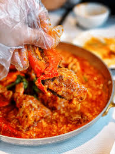
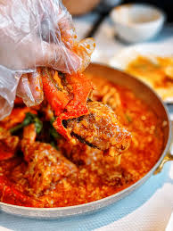

Known as the "Lion City" ,Singapore is a dazzling blend of tradition and modernity. With futuristic skylines, lush gardens, and a rich mix of cultures, it is a destination where innovation meets heritage. From bustling hawker centers to serene temples and world-class attractions, Singapore offers a unique experience that is both global and distinctly its own.
Top Attractions
No trip to Singapore is complete without visiting Marina Bay Sands, the iconic resort with its SkyPark offering sweeping views of the city. For a mix of nature and innovation, explore Gardens by the Bay, where the Supertree Grove dazzles with a nightly light show.
Culture seekers can wander through Chinatown, Little India, and Kampong Glam to experience the city’s rich heritage. For fun and relaxation, head to Sentosa Island, home to beaches, theme parks, and Universal Studios Singapore.

Food & Drink
Singapore’s food scene is legendary, blending Chinese, Malay, Indian, and Peranakan influences. Don’t miss local favorites like Hainanese chicken rice, laksa (spicy coconut noodle soup), and chilli crab, the city’s iconic seafood dish. For a quick bite, explore bustling hawker centres where world-class meals come at affordable prices, and cool off with a sweet ice kachang or a cup of traditional teh tarik.
 

Culture & Festivals
Singapore is a vibrant mix of cultures, where traditions from Chinese, Malay, Indian, and Eurasian communities come together. Colorful neighborhoods like Chinatown, Little India, and Kampong Glam celebrate this diversity year-round. Major festivals such as Chinese New Year, Hari Raya Puasa, Deepavali, and Thaipusam fill the city with light, music, and celebration.
Travel Tips
Singapore is a year-round destination with a warm tropical climate, though brief rain showers are common, so carrying an umbrella is handy. English is widely spoken alongside Malay, Mandarin, and Tamil, and the local currency is the Singapore Dollar (SGD). The city is very safe and well-connected by public transport, making it easy for visitors to explore its attractions efficiently.